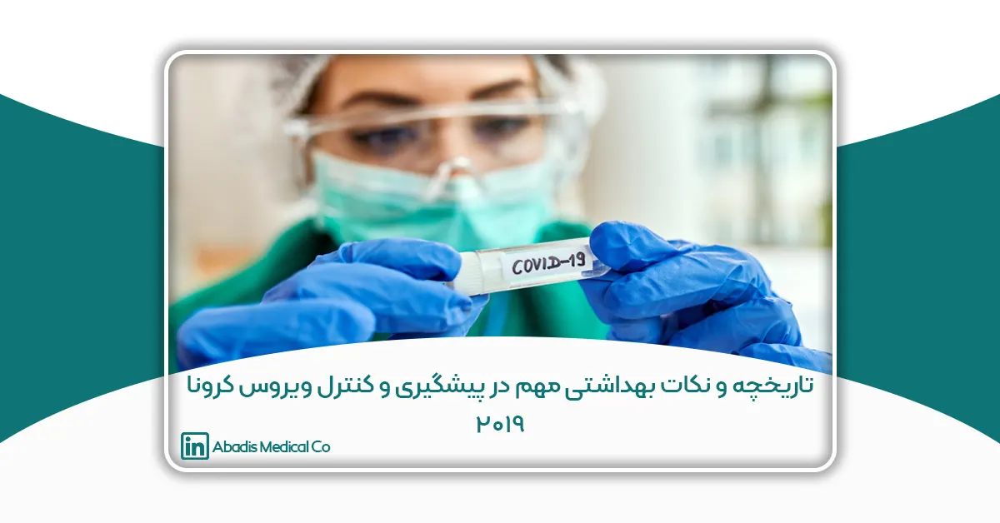

گردآورنده : دکتر پونه رحیمی ( دکتری تخصصی ویروس شناسی پزشکی و دانشیار بخش هپاتیت و ایدز انستیتو پاستور ایران)
مطلب ذیل بر اساس آخرین اطلاعات منتشر شده از منابع معتبر تا تاریخ 08/12/ 99 گردآوری شده است و قطعا در روزها وماه های آتی با انتشار یافته های جدیدتر ، نیاز به تکمیل و یا بازنگری خواهد داشت. امید است مطالعه این مقاله در پاسخ به سوالات متعددی که این روزها برای بسیاری از ما مطرح شده است و همچنین روشن شدن ابهامات در لزوم و چگونگی رعایت توصیه های بهداشتی پیشگیرانه از بیماری COVID-19 راهگشا باشد، با آرزوی تندرستی و بهروزی برای همه ایرانیان.
کرونا ویروسها سالها پیش در دهه ۱۹۶۰ بعنوان عوامل ایجاد کننده برونشیت در جوجه و پس از آن بعنوان عامل سرماخوردگی های زودگذر ، در حفره بینی افراد بیمار، شناسایی شدند و بدلیل نقش آنها در ایجاد عفونت تنفسی مختصر، در کتابهای مرجع ویروس شناسی بخش کوچکی را به خود اختصاص داده بودند. نام این ویروسها نیز بدلیل وجود گیرنده هایی بر روی پوشش بیرونی یا همان انولوپ (Envelope) آنهاست که ظاهری شبیه تاج خورشید به ویروس داده اند زیرا در زبان لاتین Corona به معنای تاج است. این خانواده ویروسی دارای ۴ جنس آلفاکرونا ویروس ، بتاکروناویروس ، گاما کرونا ویروس و دلتا کروناویروس است .
این ویروسها با اندازه ۸۰-۱۶۰ نانومتر ، دارای ژنوم تک زنجیره مثبت RNA با طول ۲۷ تا ۳۴ کیلو باز هستند که بزرگترین ژنوم در بین RNA ویروس هاست. ژنوم درون کپسید ۲۰ وجهی بسته بندی شده است و در بیرونی ترین بخش ویروس ، پوشش دو لایه فسفولیپیدی یا همان envelope قرار گرفته است. ویروس این پوشش فسفولیپیدی را از غشا سلول میزبان بدست می آورد .سپس در داخل این غشا، گلیکو پروتئین های ویروسی قرار میگیرند که یکی از وظایف آنها متصل کردن ویروس به گیرنده های سطح سلول میزبان است و بخش پروتئینی آن توسط خود ویروس رمز دهی شده و در سلول میزبان ساخته میشود. از نظرطیف میزبانی ، میزبان های این ویروسها در طبیعت طیف وسیعی از مهره داران خونگرم پرنده مانند خفاشها ، بوقلمون و سایرپرندگان که بهترین میزبانهای این ویروس هستند تا گاو ، سگ ، گربه ، خوک ؛ اسب و انسانها را شامل میشود. در طول تکامل ، ویروس های این خانواده مانند سایر خانواده های ویروسی ، ازجد مشترک خود از میزبانی به میزبان دیگر منتقل شده و انشقاق یافته اند. بعنوان مثال کروناویروس گاوی و کرونا ویروس سگ در ۱۹۵۱ از جد مشترک خود مشتق شده اند و یا کرونا ویروس گاو و کرونا ویروس انسانی OC۴۳ در دهه ۱۸۹۰ از یکدیگر جدا شده اند. کرونا ویروسهای OC۴۳, NL۶۳,HCoV- ۲۲۹E, HKU۱ همواره در جمعیت انسانی در گردش هستند و عامل سرماخوردگیهای کوتاه مدت شناخته میشوند.
این ویروس ها از طریق گلیکوپروتئین سطحی خود که در انولوپ قرار دارد و در برخی جنس های این خانواده نظیر جنس بتا کروناویروس از نوع همآگلوتینین استراز میباشد ، به گیرنده ای در سطح سلولها بنام , angiotensin-converting enzyme ۲ یا (ACE۲) متصل میشوند که بیشتر در دیواره رگها بیان میشود .
در سال ۲۰۰۲ شیوع بیماری شدید حاد تنفسی یا SARS با میزان مرگ و میر %۱۰ در Guangdong چین رخ داد و در سال ۲۰۰۳ ویروس عامل آن بعنوان SARS-Cov شناسایی شد و بیماری ۲۶ کشور جهان را با ۸۰۰۰ مورد ابتلا درگیر کرد و بدنبال آن شیوع بیماری تنفسی خاورمیانه ای یا Middle East Respiratory Syndrome در سال ۲۰۱۲ ، ۲۰۱۵ و ۲۰۱۸ توجه مراکز بهداشتی نظیر سازمان بهداشت
جهانی و مردم جهان را به خطر شیوع این ویروس ها جلب کرد . ویروس MERS در ابتدا قدرت انتقال انسان به انسان اندکی داشت اما بتدریج توانایی سرایت فرد به فرد آن افزایش یافت و منجر به اپیدیمهای مرگباری شد. در دسامبر ۲۰۱۹ یک مرد کره ای که از عربستان به کشورش برگشته بود بیمار شد و برای معالجه به چندین بیمارستان مراجعه کرد و همین امر موجب یک همه گیری وسیع در کره جنوبی شد که میزان تلفات آن ۳۴.۵% برآورد شد.
درمورد منشا همه گیری های ویروس “سارس “، محققان نظرات مختلفی را مطرح کرده اند از آن جمله بازار فروش حیوانات زنده برای غذا در Huanan چین ، که نخستین موارد ابتلا از افرادی بودند که در این بازار رفت و آمد داشتند که بعنوان کانون انتشار این ویروس بین حیوانات و انسانها معرفی شده است.
ویروس “مرس” نیز طبق بررسیها از شبه جزیره عربستان منشا گرفته و درجمعیت شترهای تعداد زیادی از کشورها شناسایی شده است. به احتمال زیاد تماس مستقیم بین انسانها و شترها طی سالیان متمادی منجر به تغییر ویروس در توانایی آن در انتقال به انسان و ایجاد بیماری شده است. پدیده ای که برای بسیاری از ویروسها نیز شناخته شده است و بنام “شکسته شدن سد میزبانی ” نامیده میشود و در اثر آن ویروس قادر خواهد بود از میزبانی به میزبان دیگر منتقل شود . این پدیده ضامن پایداری ویروس در طبیعت است .
بیماری ناشی از هر دو ویروس سارس و مرس با دوره نهفتگی یا کمون حدود ۲ تا ۱۴ روز ، با علائم مشابهی مانند تب ، سرفه ، تنگی نفس همراه است. اسهال ، تهوع/استفراغ نیز علائمی هستند که در برخی بیماران گزارش شده است بطور کلی علائم ” مرس” شدیدتر از “سارس” میباشد، پنومونی یا همان ذات الریه و همچنین از کار افتادن کلیه ها باعث افزایش میزان مرگ و میر در مبتلایان به “مرس” میباشد.
افراد مسن و همچنین افراد مبتلا به بیماریهای زمینه ای مثل مبتلایان به سرطان ، بیماران دیابتی ، بیماران کلیوی ، بیماران مزمن ریوی و بیماران مزمن قلبی در معرض خطر بالا در صورت ابتلا به عفونت با ویروسهای SARS-CoV, MERS-CoV, SARS-CoV-۲ قرار دارند.
ویروس جدید کرونا یا SARS-CoV-۲ نام خود را از تلفیق سندروم شدید حاد تنفسی یا Severe Acute Respiratory Syndrome و خانواده این ویروس یعنی Coronaviride گرفته است . از جنبه ویروس شناسی این ویروس در خاندان “ربیو ویریا ، “Rbiviria” ، فایلوم “Incertae sedis”، راسته “Nidovirales”، خانواده “Corona viridae” ، جنس “Betacoronavirus” و زیر جنس “Sarbecovirus” طبقه بندی شده است.
اما ویروس SARS-CoV-۲ عامل بیماری COVID-۱۹ یا Corona virus Disease ۱۹ از شهر Wuhan مرکز استان Hubei در کشور چین گزارش شد. منشا احتمالی آن نیز همانند “سارس” بازار فروش غذاهای دریایی در Huanan چین بوده است . بررسی های مقایسه توالی ژنوم این ویروس نوظهور بر روی ۵ نمونه در ژانویه ۲۰۲۰ نشان داد که ژنوم این ویروس جدید با ژنوم ویروس کرونای نوعی خفاش بنام تا %۸۰ و با ژنوم کرونا ویروس نوع دیگری از خفاش بنام Rhinolophus affinis تا %۹۶ شباهت دارد. مطالعات بعدی که توسط دانشمندان در گوانگژوی چین انجام شد شباهت %۹۹ بین ژنوم ویروس جدید با ژنوم کرونا ویروس پستاندار “پانگولین” pangolin را نشان دادند. ادامه تحقیقات در مورد منشا SARS-CoV-۲ نشان دهنده رخداد نوترکیبی کروناویروس در پانگولین بوده هرچند مطالعات بیشتر بر روی سایر پستانداران ادامه دارد .
پیشتر ذکر شد که کرونا ویروسها از طریق گلیکوپروتئین هایی که در پوشش خود دارند به گیرنده های سلول میزبان بنام , angiotensin-converting enzyme ۲ یا (ACE۲) متصل میشوند. جالب است بدانید که بررسیها نشان داده ویروس SARS-CoV-۲ با قدرت و تمایل بیشتری نسبت به ویروس مقدم خود ، SARS به این گیرنده ها در سطح سلولهای انسانی متصل میشود.(۱۵-۱۳)
راههای انتقال ویروس SARS-CoV-۲ و پیشگیری از آن
Coronavirus disease (COVID-۱۹) technical guidance: Infection prevention and control انتقال این ویروس از طریق droplets یا قطرات تنفسی و همچنین تماس فرد سالم با فرد بیمار صورت میگیرد. Droplets یا قطرات تنفسی ، هنگام عطسه یا سرفه یا بازدم از راه های تنفسی فرد خارج می شوند.
اگر فرد به بیماری ویروسی مبتلا باشد این قطرات حاوی ذرات ویروسی خواهند بود. از آنجا که این قطرات تنفسی سنگین هستند قادر به طی مسافت زیادی نیستند( حدود ۱ متر ) و بسرعت بر روی سطوح یا زمین ته نشین میشوند. بنابر این هر فردیکه با فردی دارای علائم عطسه یا سرفه در فاصله کمتر از یک متری قرار داشته باشد در معرض خطر عفونت با این ویروس است . هرچند طبق توصیه سازمان بهداشت جهانی پوشیدن ماسک بدون رعایت سایر نکات ایمنی نظیر شستن مکرر دستها و یا ضدعفونی آنها با الکل برای پیشگیری از ابتلا به بیماری “کافی نیست”!.
همچنین سازمان بهداشت جهانی تاکید کرده است که استفاده از ماسک در شرایطی که فرد در محیط دارای ویروس SAR-CoV-۲ و در تماس با مبتلایان نیست علاوه بر تحمیل هزینه میتواند ضررهایی برای سلامت فرد داشته باشد. در عین حال عدم رعایت نکات بهداشتی نظیر شستشوی مکرر دستها ، به ویژه قبل از پوشیدن ماسک و یا اشتباه در پوشیدن ماسک مثل عدم تنظیم ماسک با صورت به نحوی که نتواند جلوی تبادل قطرات تنفسی را بگیرد منجر به خطرات بیشتری برای سلامت فرد خواهد شد.
تماس با وسایل یا سطوحی که فرد بیمار با آنها در تماس بوده است نیز بعنوان راه انتقال ویروس شناخته شده است . تا کنون هیچ شواهد علمی مبنی بر انتقال این ویروس از حیوانات مزرعه و یا حیوانات خانگی به انسان مشاهده نشده ، هرچند سازمان بهداشت جهانی توصیه میکند که از تماس بدون دستکش پرهیز شود و در صورت تماس با این حیوانات حتما دستها با آب و صابون به دقت شسته شوند.
انتقال ویروس SARS-CoV-۲ به انسان به احتمال زیاد توسط یک حیوان واسطه انجام شده است و تحقیقات برای یافتن این واسطه ادامه دارد. انتقال از طریق خوردن غذاهای حاوی گوشت یا سایر فراورده های حیوانی در این بیماری (COVID-۱۹) همانند بیماریهای هم خانواده اش یعنی سارس و مرس مشاهده نشده است اما ، پایداری ویروس بر روی مواد غذایی خام موجب شده تا این سازمان پرهیز از خوردن غذاهای خام یا غذاهایی که کامل پخته نشده اند را اکیدا توصیه کند .
در ۲۱ فوریه گزارشی مبنی بر شناسایی ویروس در مدفوع بیماران COVID-۱۹ منتشر شده است . هرچند باید منتظر گزارشات بیشتر تاییدی بود اما احتمال انتشار این ویروس از مدفوع ، میتواند راه انتقال مدفوعی- دهانی یا بهتر بگوییم مدفوعی- مخاطی را نیز مطرح کند. دراینصورت نیز شستشوی مکرر دستها با آب و صابون و یا ضدعفونی آنها با الکل نقش بسیار مهمی در پیشگیری از این بیماری خواهد داشت .هرچند در ۲۴ فوریه نتیجه بررسی دیگری بر روی ۲ بیمار چینی نشان داد که ویروس SARS-CoV-۲در مدفوع و ادرار بیماران مبتلا به COVID-۱۹ شناسایی نشده است، و میزان ویروس در خلط از نمونه های سواب گلو بیشتر بود . بنابراین باید منتظر گزارشات بیشتری بود تا راه های مختلف انتشار ویروس مشخص شود.
دوره نهفتگی یا کمون این بیماری COVID-۱۹ بین ۱۴-۲ روز گزارش شده است و در این مدت فرد قادر به انتشار ویروس از طریق قطرات تنفسی میباشد در حالیکه علائم بیماری را ندارد.
علائم بیماری شامل تب، سرفه که دربیشتر موارد سرفه خشک است (بدون دفع خلط)، بدن درد و تنگی نفس ، احساس سنگینی در قفسه سینه ، و در ۱۰%-۲ بیماران علائم گوارشی مانند اسهال ،درد شکمی و استفراغ مشاهده شده است.
توصیه سازمان بهداشت جهانی در مورد استفاده از ماسک: پوشیدن ماسک در محیط بیرون از خانه ، در داخل خانه و در مکانهای ارائه دهنده خدمات بهداشتی در شرایطی که شیوع ویروس SARS-CoV-۲ در این مکانها گزارش شده باشد ، اکیدا توصیه می شود .
ویژگی های ویروس SARS-CoV-۲ ، پایداری در محیط خارج سلول و مواد و روشهای غیرفعال کردن این ویروس در شرایط یخ زدگی (freez) در دمای20- °C تا ۲ روز پایدار است .
از آنجا که ویروس مرس که هم خانواده ویروس SARS-CoV-۲ است در سرمایC ۴° در یخچال تا ۷۲ ساعت زنده میماند، برآورد شده که این ویروس نیز تا ۷۲ ساعت در یخچال پایدار است.
ویروسهای SARS-CoV و MERS-CoV بر روی سطوح بر اساس ترکیبی از شرایط محیطی مانند دما، میزان رطوبت و نور تا چند روز زنده میمانند و ویروس SARS-CoV-۲ نیز بر روی سطوح فلزی، چوبی، شیشه ای، کاغذ و سطوح پلاستیکی در محدوده ۲ تا ۹ روز زنده میماند.
ویروسی که بر روی سطوح قرار دارد به راحتی با اتانول ۶۰ تا %۷۰ ، پراکسید هیدروژن (آب اکسیژنه) ۰.۵% ، هیپوکلریت سدیم ۰.۱% ظرف مدت ۱ دقیقه از بین میرود. محلولهایی شامل %۳۰ پروپانول ، بهمراه ۰.۵- ۲.۵% گلوتارآلدهاید ، فورمالدهاید % ۰.۷- ۱ و پوویدون آیوداین ( povidone iodine ۰.۲۳-۷.۵ % بسرعت موجب غیر فعال شدن کرونا ویروسها میشوند. سفید کننده های خانگی مانند وایتکس با غلظتهای خیلی کم )حدود )۰.۲۱% قادر است بخوبی سطوح حاوی ویروس را تمیز کند.
محلولهای دیگری مانند رقت ۰.۰۵- ۰.۲% کلراید بنزالکونیوم ،یا محلول ۰.۰۲ کلرهگزیدین دیگلوکونات در از بین بردن این ویروس کمتر موثر بوده اند.
توصیههای سازمان بهداشت جهانی برای افراد سالم که به ویروس SARS-CoV-۲ مبتلا نیستند:
– پرهیز از حضورغیر ضروری در جمعیت و خیابان.
– حفظ فاصله حداقل ۱ متری با افرادی که سرفه یا عطسه میکنند.
– ضدعفونی کردن دستها با الکل و یا پدهای الکلی درصورتیکه دستها بطور واضح کثیف نیستند.
در صورتیکه دستها به وضوح کثیف باشند، شستن دستها با آب و صابون بطور دقیق که تمام زوایای دست شسته شود.
اگر عطسه یا سرفه دارید جلوی دهان و بینی را با قسمت خم شونده آرنج کامل بپوشانید یا از دستمال کاغذی استفاده کنید. پس از عطسه یا سرفه دستمال کاغذی را بسرعت در سطل زباله انداخته و دستها را با آب و صابون بشویید و یا با الکل ضدعفونی کنید. از تماس با بینی و دهان خودداری کنید.
استفاده از ماسک برای افراد سالم که در محیط آلوده به ویروس و یا مجاورت با فرد بیمار قرار ندارند ، توصیه نمیشود. هرچند در کشورهایی که عادات خاص مانند آب دهان انداختن وغیره دارند، استفاده از ماسک برای افراد سالم میتواند توصیه گردد.
توصیه سازمان بهداشت جهانی به افراد مشکوک به عفونت با ویروس SARS-CoV-۲
اگر مشکوک به عفونت با SARS-CoV-۲هستید و علائم تنفسی خفیف دارید:
– دستها را بطور مرتب با آب و صابون و الکل ضدعفونی کنید.
– از سایر افراد حداقل ۱ متر فاصله بگیرید.
– فورا از ماسک استفاده کنید و درصورت تحمل استفاده از ماسک را ادامه دهید.
– اگر استفاده از ماسک قابل تحمل نیست در مواقع عطسه یا سرفه پوشاندن دهان و بینی را به دقت رعایت کنید.
– تمام وسایل استفاده شده مانند ماسک، دستمال کاغذی باید فورا به سطل زباله انداخته شوند و بلافاصله دستها ضدعفونی شوند.
– پنچرهها را باز بگذارید تا جریان هوا در اتاق برقرار باشد.
توصیه سازمان بهداشت جهانی به افراد بیمار
در صورت احساس تب ، سرفه و یا سختی در نفس کشیدن فورا ماسک بزنید و سریع به مراکز درمانی مراجعه کنید.
در صورتیکه به مراکز دسترسی ندارید یا در مناطقی که تخت بیمارستانی یا ارائه خدمات بهداشتی مناسب امکانپذیر نمیباشد اولین اقدام جداسازی یا ایزوله کردن فرد بیمار از سایرین است.
توصیه سازمان بهداشت جهانی به افرادی که از بیماران مشکوک به عفونت با ویروس SARS-CoV-۲ با علائم خفیف تنفسی مراقبت میکنند
ضدعفونی کرن دستها با الکل در صورتیکه دستها به وضوح کثیف نباشند و شستن دقیق دستها با آب و صابون در صورتیکه دستها بطور واضح کثیف باشند.
از فرد بیمار حداقل ۱ متر فاصله داشته باشید.
هنگامیکه با فرد بیمار در یک اتاق هستید از ماسک استفاده کنید.
موادی که توسط بیمار استفاده میشوند مانند دستمال کاغذی را فورا در سطل زباله بیندازید و دستها را لافاصله با الکل ضدعفونی کنید و یا با دقت با آب و صابون بشویید.
پنچره ها و درها را باز بگذارید تا هوا بطور کامل جریان داشته باشد.
توصیه های سازمان بهداشت جهانی به پرسنل مراکز درمانی که به ویروس SARS-CoV-۲ آلوده شده اند
در زمانیکه در تریاژ یا اتاق انتظار یا در حال انتقال به بیمارستان هستید حتما ماسک بزنید.
در تمام مدتی که منتظر جواب آزمایش خود هستید ماسک بپوشید.
اگر در یک اتاق تنها و ایزوله هستید نیازی به استفاده از ماسک ندارید ولی در صورت عطسه با سرفه نکات بهداشتی را دقیق رعایت کنید تا فضای اتاق آلوده نشود. سپس فورا دستها را با الکل ضدعفونی کنید یا به دقت با آب و صابون شستشو دهید
توصیه های سازمان بهداشت جهانی به پرسنل مراکز درمانی
هنگامیکه وارد اتاق بیمار یا فرد مشکوک به عفونت با ویروس SARS-CoV-۲ میشوید حتما از ماسک استفاده کنید.
در زمان انجام عملیاتی که تولید ترشحات تنفسی و یا ائروسل میکند مانند لوله گذاری نای ، روشهای تنفس غیر تهاجمی مانند وصل کردن دستگاه کمک تنفسی، سوراخ کردن نای ،احیای قلبی- ریوی (CPR)، تنفس مصنوعی قبل از لوله گذاری ، حتما از ماسکهای تخصصی مورد تایید نظیر N۹۵، FFP۲ که مورد تایید استاندارد اتحادیه اروپاست و یا ماسکهایی با عملکرد مانند اینها استفاده کنید.
توصیه های سازمان بهداشت جهانی در مورد نحوه استفاده و دورانداختن ماسک
در صورت نیاز به استفاده از ماسک، نحوه پوشیدن ماسک و قرار دادن آن بر روی صورت و همچنین نحوه دورانداختن آن در پیشگیری از عفونت با ویروس و همچین جلوگیری از انتشار ویروس در محیط اهمیت بسیار زیادی برخوردار است.
در پوشیدن ماسک دقت شود که ماسک کاملا بر روی بینی و دهان قرار گیرد ، با دقت محکم بسته شود و هیچ فاصله ای بین ماسک و صورت وجود نداشته باشد.
در زمانیکه ماسک بر روی صورت قرار دارد از دست زدن به آن جدا خودداری شود.
هنگام برداشتن ماسک دقت شود هرگز از قسمت جلوی ماسک اقدام به برداشتن آن نشود بلکه با برداشتن بندها یا آزاد کردن کشهای پشتی ، ماسک از روی صورت برداشته شود.
پس از برداشتن ماسک یا در صورت تماس با یک ماسک استفاده شده ، فورا دستها را با الکل ضدعفونی کنید و در صورتیکه دستها به وضوح آلوده شدهاند، به دقت دستها با آب و صابون شسته شوند. در صورتیکه ماسک آسیب دید یا مرطوب شد، فورا ماسک جدیدی استفاده شود.
هرگز از ماسکهای یکبار مصرف، مجدد استفاده نشود.
پس از هربار مصرف، ماسکی که از صورت برداشته شده است ، فورا در سطل زباله انداخته شود.
استفاده از ماسک های پارچه ای و ماسک های گازی که از بافت سبک و دارای منافذ زیاد ساخته شده اند ساختاری مانند گاز هایی که برای بانداژ زخم بکار میروند ، تحت هیچ شرایطی توصیه نمیشوند.
در ادامه به معرفی انواعی از پرکاربرد ترین ماسکها میپردازیم:
ماسکهای معمولی پنبه ای یا Face masks یا :Gauze masks ماسکهای نازکی هستند که دهان و بینی را پوشش میدهند ولی بر روی صورت محکم و ثابت قرار نمیگیرند .معموال با کش یا بند پشت سر بسته میشوند. این ماسکها به هیچ عنوان برای پیشگیری از انتقال ویروس توصیه نمیشوند.
ماسکهای برجسته یا (molded face mask) ماسک هایی نسبتا ضخیم که با شکل برجسته ای که دارند روی دهان و بینی را میپوشانند و با کش در پشت سر ثابت میشوند. این ماسکها توسط سازمان بهداشت جهانی برای پیشگیری از انتقال ویروس SARS-CoV-۲ به هیچ وجه توصیه نمیشوند.
ماسک جراحی: این نوع ماسکها بیشترین کاربرد را در اتاق عمل و در زمان انجام اعمال مراقبتی برای بیماران به منظور جلوگیری از ایجاد عفونت در بیمار دارند.
ماسکهای جراحی دارای دو رویه با رنگهای سفید و آبی ( گاهی سبز )هستند. در پوشیدن ماسک برای جلوگیری از انتقال بیماری باید به این نکات بسیار دقت شود:
اول: پیش از پوشیدن ماسک دستها با آب و صابون شسته شوند یا با الکل %۷۰ ضدعفونی شوند.
دوم: دقت شود که طرف سفید رنگ دارای فیلتر است. پس اگر فرد بیمار است باید طرف سفید رنگ را بسمت صورت خود بپوشد تا قطرات تنفسی ناشی از عطسه یا سرفه در محیط پراکنده نشود.
اگر میخواهید خود را از قطرات تنفسی احتمالی دیگران حفظ کنید طرف آبی ماسک را روی دهان و بینی خود قرا دهید.
سوم: ماسک به خوبی با صورت تنظیم شود تا قطرات تنفسی به بیرون راه پیدا نکنند.
چهارم: زمان تعویض ماسک به مرطوب شدن آن بستگی دارد. هر زمان که احساس شد ماسک مرطوب شده باید تعویض شود. این زمان معموال حدود ۲ ساعت برای ماسکها جراحی است . البته برای پرسنل بیمارستانی و پزشکان باید تعویض ماسک بعد از هر بار ویزیت یک بیمار انجام شود.
پنجم: ماسکها به هیچ عنوان قابل استفاده مجدد یا شستشو نیستند.
ششم: برداشتن ماسک از روی صورت بدون تماس با جلوی ماسک انجام شود و پس از برداشتن ماسک در سطل زباله انداخته شود. سپس دستها با الکل ضدعفونی شوند یا با آب و صابون شسته شوند.
ماسک های N۹۵ ، : N۱۰۰, N۹۹ این ماسکها ویژگی حفاظتی بالایی دارند به طوریکه قادرند بترتیب از ورود حدود ۹۹ , ۹۵ و %۹۹.۹۷ ذرات ریز مانند گرد و خاک ، هاگ قارچها و بسیاری از ویروسها تا اندازه ۰.۳ microns و قطرات تنفسی (حاوی ویروس) جلوگیری کنند و استفاده از آنها در موارد “پاندمی” بیماریهای تنفسی در پزشکان و پرسنل بیمارستانی و آزمایشگاهی که بابیمار و نمونه های تنفسی بیماران سرو کار دارند توصیه میشود . زمان استفاده از آنها تا ۸ ساعت است ولی در صورتیکه ماسک آسیب فیزیکی ندیده باشد یا فیلتر آن از نظر انعطاف پذیری تغییر نکرده باشد (سخت نشده باشد) نیز قابل استفاده است. تعویض این ماسکها نیز در موارد تماس نزدیک با بیماران مبتال به عفونتهای تنفسی ، در مواردیکه ماسک به قطرات تنفسی ، مایعات بدن و یا خون آلوده شده باشد اجباری است، این ماسکها در برابر روغن آسیب پذیر هستند و ویژگی خود را کامال از دست میدهند. نوع دیگری از ماسکها بنام P۱۰۰ عالوه بر دارا بودن ویژگیهای حفاظتی ماسکهای N۹۵ ، در برابر روغن نیز نفوذ ناپذیر هستند.